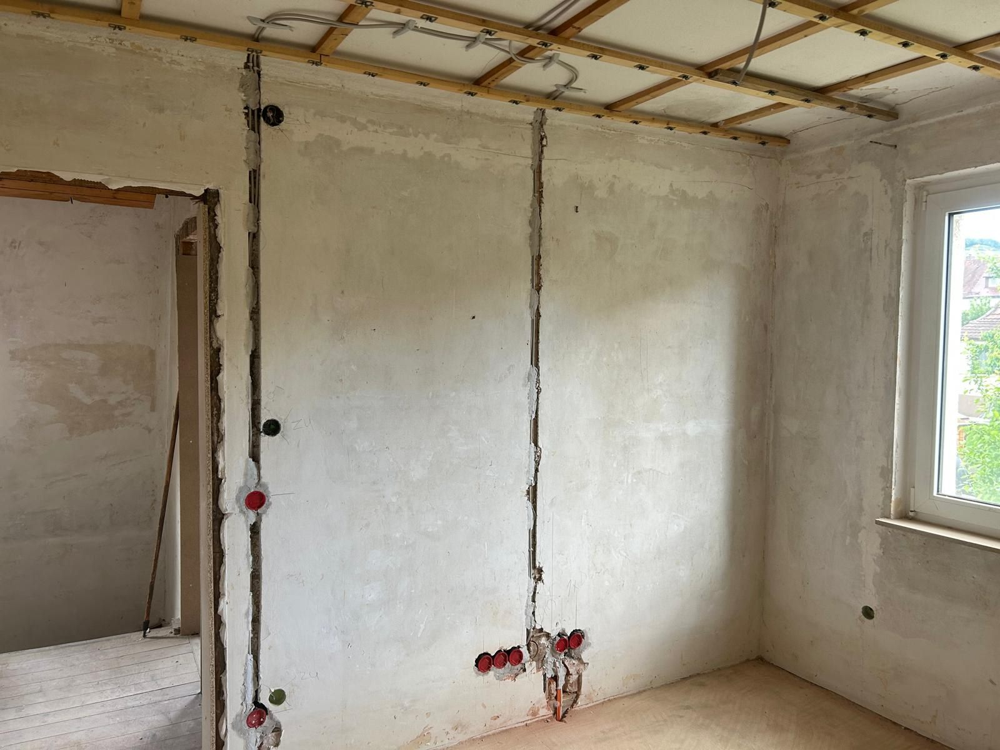

Elektroinstallation für Neubau & Altbausanierung
Mehr Sicherheit, Komfort und Energieeffizienz im Neu- und Altbau.

Wir planen und realisieren die komplette Elektroinstallation für Ihr Neu- oder Altbauprojekt. Während der gesamten Bauphase stehen wir Ihnen als persönlicher Ansprechpartner zur Seite und reagieren flexibel auf Änderungswünsche oder neue Anforderungen. Dabei setzen wir auf moderne Technik, höchste Qualitätsstandards und eine zukunftssichere Ausführung.
Bei der Altbausanierung achten wir besonders darauf, die bestehende Bausubstanz zu berücksichtigen und die Elektroinstallation dennoch auf den aktuellen Stand zu bringen – von der Verteilung über die Leitungsführung bis zu ausreichend Reserven für Photovoltaik, Wallbox oder Smart Home. Im Neubau planen wir die komplette Elektroinstallation von Anfang an mit und stimmen uns eng mit Architekt und anderen Gewerken ab.